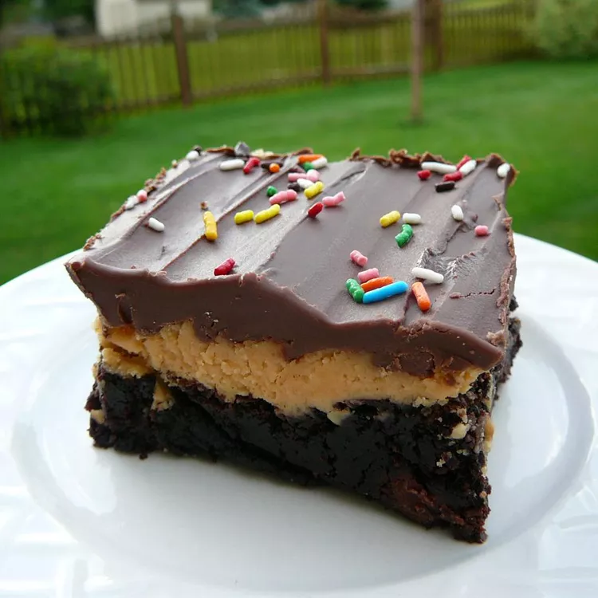

Buckeye Brownies

Description
Chewy brownies with the perfect combo of salty-sweet peanut butter. If you take it somewhere, you'd better bring the recipe with you!
Ingredients
- brownie mix
- ⅔ cup vegetable oil
- 2 eggs
- 2 cups confectioners' sugar
- 1 cup creamy peanut butter
- ½ cup butter, softened
- 1 (6 ounce) package chocolate chips
- 6 tablespoons butter, softened
Steps
- Preheat oven to 350 degrees F (175 degrees C). Grease a 9x13-inch baking dish.
- Combine brownie mix, oil, eggs, and water together in a bowl until batter is smooth; pour into the prepared baking dish.
- Bake in the preheated oven until edges of brownies begin to pull away from the sides of pan, 28 to 31 minutes. Remove dish from oven and cool brownies.
- Beat confectioners' sugar, peanut butter, and 1/2 cup butter together in a bowl until smooth and creamy; spread over cooled brownies.
- Heat chocolate chips and 6 tablespoons butter together in a saucepan over low heat, stirring occasionally, until melted, about 5 minutes; spread over peanut butter layer. Cool and cut into squares.